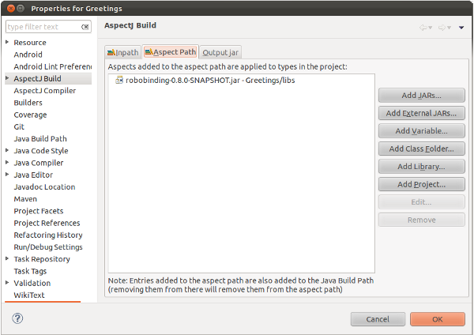

Needless to say, you will need both Eclipse and the Android Development Tools plugin installed.
Start by adding either the robobinding-{{ site.latest_version }}.jar or the robobinding-{{ site.latest_version }}-all.jar to the libs folder of your project, then add it to your classpath by right clicking on your project→Properties→Java Build Path→Libraries→Add JARs. If you're using the jar without dependencies, you will additionally need add both the apache-commons-lang 3.1+ and guava 11.0.1+ jars to your classpath.
For adding the RoboBinding jar to your project dependencies via Maven, see the relevant section.
The RoboBinding framework incorporates AspectJ aspects to auto-generate the property-change notification code in your presentation models. If you want to take advantage of this (recommended), you'll need to install the AspectJ Development Tools (AJDT) plugin.
Once you have it installed, right-click on your project→Configure→Convert to AspectJ Project. This will add the AspectJ natures to your .project file, and you should be good to go.
Finally, you'll need to make sure the RoboBinding jar is added to your project Aspect Path.
Right click on your project→Properties→AspectJ Build→Aspect Path→Add JARs.